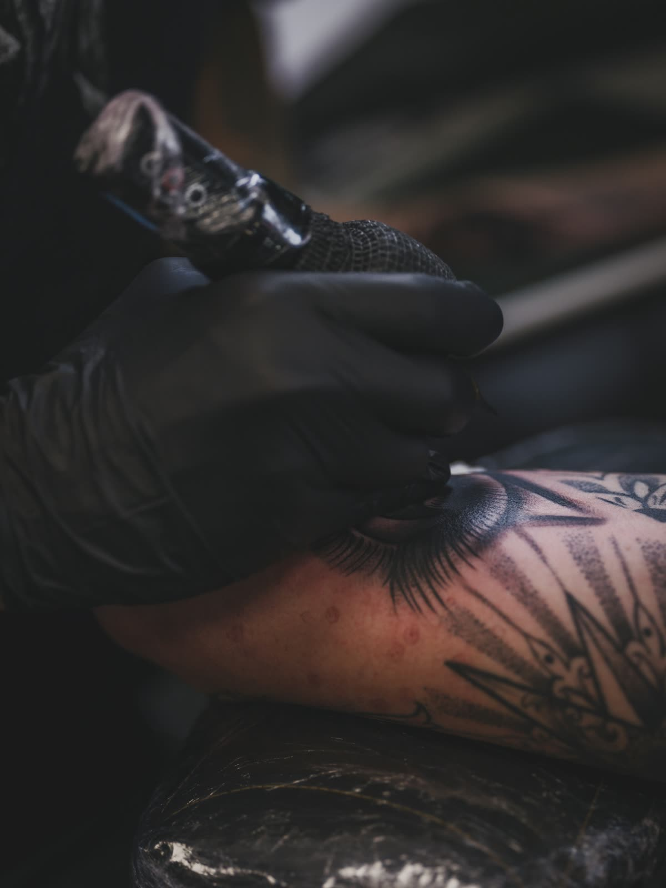

Zašto ne smeš da veruješ svemu što pročitaš o tetovažama

Malo koja tema ima toliko mitova oko sebe kao tetoviranje. Priče se prenose sa kolena na koleno, sa foruma na forum, i vremenom se toliko ukorene da ljudi u njih veruju kao u činjenice. Vredi razbiti neke od najčešćih, jer pogrešna verovanja često plaše ljude bez razloga ili ih navode na loše odluke.
Jedan od najpoznatijih mitova kaže da ne smeš da se tetoviraš ako imaš mladež ili puno pega. Istina je da dobar majstor jednostavno neće tetovirati preko mladeža, i to ne zato što je opasno za tetovažu, već zato što je važno da mladež ostane vidljiv radi praćenja zdravlja kože. Umesto da preskoči čitav deo tela, majstor će jednostavno ostaviti mali razmak oko njega i dizajn se prilagodi tako da to niko i ne primeti.
Druga rasprostranjena zabluda je da tetovaže „kvare” znojenje ili da osoba sa velikim tetovažama ne može normalno da se znoji. To jednostavno nije tačno. Mastilo se nalazi u dermisu, a znojne žlezde funkcionišu potpuno nezavisno od pigmenta. Ljudi sa telom prekrivenim tetovažama znoje se isto kao i svi ostali. Ovaj mit verovatno potiče od toga što sveža tetovaža, dok zaceljuje, privremeno menja način na koji koža reaguje, ali to prođe za par nedelja.
Postoji i verovanje da su tanke, sitne linije „lakše” za telo i da manje bole nego velike tetovaže. Ironično, često je obrnuto. Vrlo fine linije zahtevaju precizne i spore prolaze iglom, dok popunjavanje velikih površina ide brže i telo ga ponekad podnese lakše. Veličina tetovaže ne govori direktno o tome koliko će boleti, mnogo je važnije mesto na telu i tehnika koja se koristi.
Čest je i mit da tetovaža mora da bude skupa da bi bila dobra, ili obrnuto, da je jeftina tetovaža isto što i loša. Cena zavisi od mnogo faktora, iskustva majstora, veličine i detalja, ali prava mera kvaliteta je portfolio majstora i higijena studija, a ne sam iznos. Najpametnije je da gledaš radove, a ne cenu, jer tetovažu nosiš ceo život.
Na kraju, tu je i priča da tetovaže ne mogu da se uklone ili poprave. Iako je uklanjanje laserom proces koji traje i nije jeftin, danas je sasvim moguće. Isto tako, veliki broj naizgled „propalih” tetovaža može da se pretvori u nešto lepo kroz takozvani cover up, gde vešt majstor iskoristi stari rad kao osnovu za novi dizajn. Malo koja greška je zaista trajna presuda.
Few subjects carry as many myths as tattooing. Stories get passed down from person to person, from forum to forum, and over time they take root so deeply that people believe them as fact. It is worth breaking down some of the most common ones, because wrong beliefs often scare people off for no reason or push them into bad decisions.
One of the best known myths says you cannot get tattooed if you have moles or lots of freckles. The truth is that a good artist simply will not tattoo over a mole, and not because it is dangerous for the tattoo, but because it matters that the mole stays visible so your skin health can be monitored. Instead of skipping an entire part of the body, the artist will just leave a small gap around it and the design adapts so that nobody even notices.
Another widespread misconception is that tattoos „ruin” sweating, or that a person with large tattoos cannot sweat normally. That is simply not true. The ink sits in the dermis, and sweat glands work completely independently of pigment. People covered in tattoos sweat exactly like everyone else. This myth probably comes from the fact that a fresh tattoo, while it heals, temporarily changes how the skin behaves, but that passes within a couple of weeks.
There is also a belief that thin, small lines are „easier” on the body and hurt less than large tattoos. Ironically, it is often the opposite. Very fine lines demand precise, slow passes with the needle, while filling large areas goes faster and the body sometimes takes it more easily. The size of a tattoo does not directly tell you how much it will hurt; the spot on the body and the technique used matter far more.
Another common myth is that a tattoo has to be expensive to be good, or the reverse, that a cheap tattoo is the same as a bad one. Price depends on many factors, the artist's experience, the size and the detail, but the real measure of quality is the artist's portfolio and the studio's hygiene, not the amount itself. The smartest thing is to look at the work, not the price, because you wear the tattoo for life.
Finally, there is the story that tattoos cannot be removed or fixed. Although laser removal is a process that takes time and is not cheap, today it is entirely possible. In the same way, a large number of seemingly „ruined” tattoos can be turned into something beautiful through a so-called cover up, where a skilled artist uses the old piece as the base for a new design. Very few mistakes are truly a life sentence.